DEM 7223 - Introduction to Event History Analysis and Functions of Survival Time
Rational for Event history analysis
When to conduct an event history analysis?
- When you questions include
- When or Whether
- When > how long until an event occurs
- Whether > does an event occur or not
- If your question does not include either of these ideas (or cannot be made to) then you do not need to do event history analysis
Basic Propositions
- Since most of the methods we will discuss originate from studies of mortality, they have morbid names
- Survival – This is related to how long a case lasts until it experiences the event of interest
- How long does it take?
- Risk – How likely is it that the case will experience the event
- Will it happen or not?
Focus on comparison
- Most of the methods we consider are comparative by their nature
- How long does a case with trait x survive, compared to a case with trait y?
- How likely is it for a person who is married to die of homicide relative to someone who is single?
- Generally we are examining relative risk and relative survival
Some terminology
It is important to establish some key vocabulary we will use throughout the course. These terms are essential to our modeling and thinking about structuring our data and measuring our outcomes. We will use a simple example of the time to first birth to illustrate.
-
State – discrete condition an individual may occupy that occur within a state space. Most survival analysis methods assume a single state to state transition.
- e.g. for our example the two states would be: Childless and having 1 child born
-
State space – full set of state alternatives
- e.g. the two states would be: Childless and having 1 child born
-
Episodes/Events/Transitions – a change in states
- The transition would be having a first child. The event would be coded as 0/1 based on whether a woman has had a fist child or not
-
Durations – length of an episode
- The duration here would be the length of time between the start of the risk (for this outcome, it’s typically marriage) and the time of the first birth.
-
Time axis – Metric for measuring durations (days, months, years)
- Time could be measured in days, weeks, months, or even years.
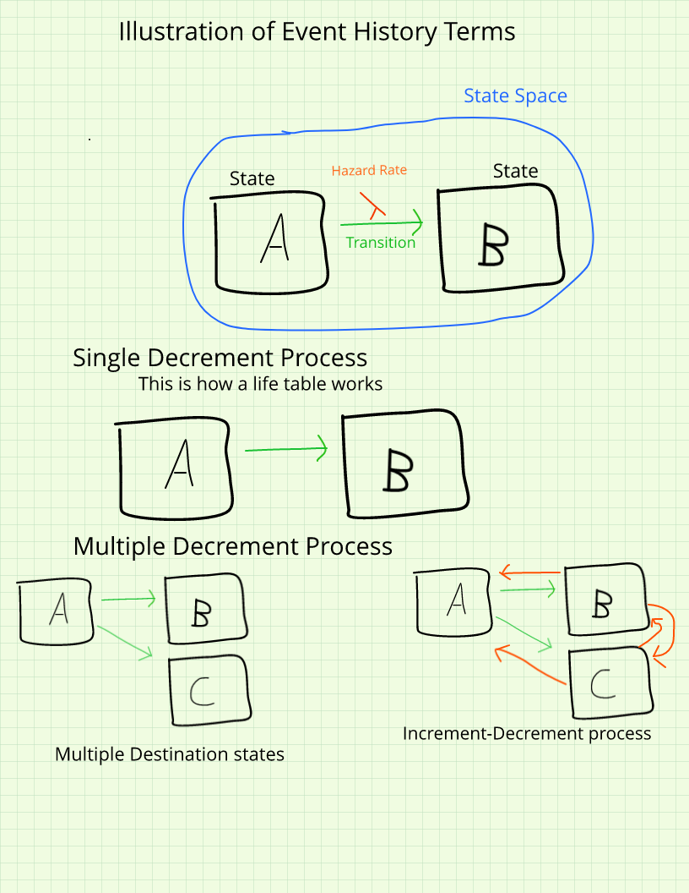
Issues in event history data
Censoring
-
Censoring occurs when you do not actually observe the event of interest within the period of data collection
- e.g. you know someone gets married, but you never observe them having a child
- e.g. someone leaves alcohol treatment and is never observed drinking again
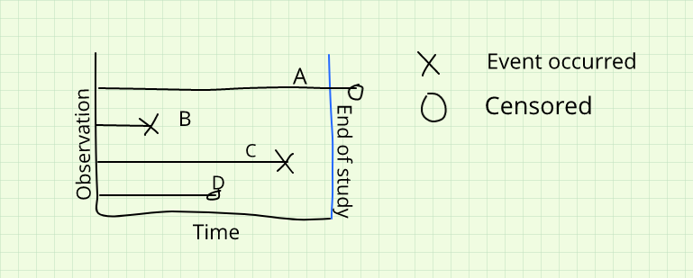
Non-informative censoring
- The individual is not observed because the observer ends the study period
- The censoring is not related to any trait or action of the case, but related to the observer
- We want most of our censoring to be this kind
Informative censoring
- The individual is not observed because they represent a special case
- The censoring IS related to something about the individual, and these people differ inherently from uncensored cases
- People that are censored ARE likely to have experience the event
Right censoring
- An event time is unknown because it is not observed.
- This is easier to deal with, and what most statistical models we will talk about assume
Left censoring
- An event time is unknown because it occurred prior to the beginning of data collection, but not when
- This is difficult to deal with
Interval censoring
- The event time is known to have occurred within a period of time, but it is unknown exactly when
- This can be dealt with
Time Scales
- Continuous time
- Time is measured in very precise, unique increments > miles until a tire blows out
- Each observed duration is unique
- Discrete time
- Time is measured in discrete lumps > semester a student leaves college
- Each observed duration is not necessarily unique, and takes one of a set of discrete values

Making continuous outcomes discrete
Ideally you should measure the duration as finely as possible (see Freedman et al)
Often you may choose to discretize the data > take continuous time and break it into discrete chunks
-
Problems
- This removes possibly informative information on duration variability
- Any discrete dividing point is arbitrary
- You may arrive at different conclusions given the interval you choose
- You lose information about late event occurrence
- Lose all information on mean or average duration
Kinds of studies with event history data
-
Cross sectional
- Measured at one time point (no change observed)
- Can measure lots of things at once
- Retrospective designs are often used, e.g. the DHS and NSFG use retrospective fertility surveys
Ask respondents about events that have previously occurred.
Generate birth/migration/marital histories for individuals
Problems with recall bias
-
Panel data
- Multiple measurements at discrete time points on the same individuals
- Can look at change over time
- Panels are often short in time, and involve a mixture of new and old respondents
-
Longitudinal designs
- Continuous measurement of units over a fixed period of time, focusing on change in states
- Think clinical follow-ups
-
Prospective designs
- Studies that follow a group (cohort) and follow them over time
- Expensive and take a long time, but can lead to extremely valuable information on changes in behaviors
-
Record linkage procedures
- Begin with an event of interest (birth, marriage) and follow individuals using various record types
- Birth > Census 1880 > Census 1890 > Marriage > Birth of children > Census 1900 > Tax records >Death certificate
- Mostly used in historical studies
- Modern studies link health surveys to National Death Index (NHANES, NHIS)
Some arrangements for event history data
Counting process data
- This is what we are accustomed to in the life table, and your observations are typically aggregated into risk groups, for the life table these are age groups. Once your groups are identified, you count the number of observations experiencing the event of interest in that age group
Code
t1<-data.frame(Age_start=c(1,2,3,4),
Age_end=c(2,3,4,5),
Failing=c(25,15,12,20),
At_Risk=c(100, 75, 60, 40))
t1%>%
kable()%>%
column_spec(1:4, border_left = T, border_right = T)%>%
kable_styling()| Age_start | Age_end | Failing | At_Risk |
|---|---|---|---|
| 1 | 2 | 25 | 100 |
| 2 | 3 | 15 | 75 |
| 3 | 4 | 12 | 60 |
| 4 | 5 | 20 | 40 |
Case - duration, or person level data
- This is the general form of continuous time survival data.
Code
t2<-data.frame(ID = c(1,2,3,4),
Duration=c(5, 2, 9 , 6),
Event_Occurred=c("Yes (1)","Yes (1)","No (0)", "Yes (1)" ))
t2%>%
kable()%>%
column_spec(1:3, border_left = T, border_right = T)%>%
kable_styling(row_label_position = "c", position = "center" )| ID | Duration | Event_Occurred |
|---|---|---|
| 1 | 5 | Yes (1) |
| 2 | 2 | Yes (1) |
| 3 | 9 | No (0) |
| 4 | 6 | Yes (1) |
Code
#knitr::kable(t2, format = "html", caption = "Case-duration data", align = "c")This can be transformed into person-period data, or discrete time data.
Person – Period data
- Express exposure as discrete periods
- Event occurrence is coded at each period
Code
t3<-data.frame(ID=c(rep(1, 5), rep(2, 2), rep(3, 9), rep(4, 6)),
Period = c(seq(1:5), seq(1:2), seq(1:9), seq(1:6)),
Event=c(0,0,0,0,1,0,1,0,0,0,0,0,0,0,0,0,0,0,0,0,0,0))
t3%>%
kable()%>%
column_spec(1:3, border_left = T, border_right = T)%>%
kable_styling(row_label_position = "c", position = "center" )| ID | Period | Event |
|---|---|---|
| 1 | 1 | 0 |
| 1 | 2 | 0 |
| 1 | 3 | 0 |
| 1 | 4 | 0 |
| 1 | 5 | 1 |
| 2 | 1 | 0 |
| 2 | 2 | 1 |
| 3 | 1 | 0 |
| 3 | 2 | 0 |
| 3 | 3 | 0 |
| 3 | 4 | 0 |
| 3 | 5 | 0 |
| 3 | 6 | 0 |
| 3 | 7 | 0 |
| 3 | 8 | 0 |
| 3 | 9 | 0 |
| 4 | 1 | 0 |
| 4 | 2 | 0 |
| 4 | 3 | 0 |
| 4 | 4 | 0 |
| 4 | 5 | 0 |
| 4 | 6 | 0 |
Functions of Survival Time
Homage to the life table
In life tables, we had lots of functions of the death process. Some of these were more interesting than others, with two being of special interest to use here.
These are the \(l(x)\) and \(q(x, n)\) functions.
If you recall, \(l(x)\) represents the population size of the stationary population that is alive at age \(x\), and the risk of dying between age \(x, x+n\) is \(q(x, n)\).
If you want to see a relatively current US life table, look here
Here is the life table through age 34 for the US in 2019:
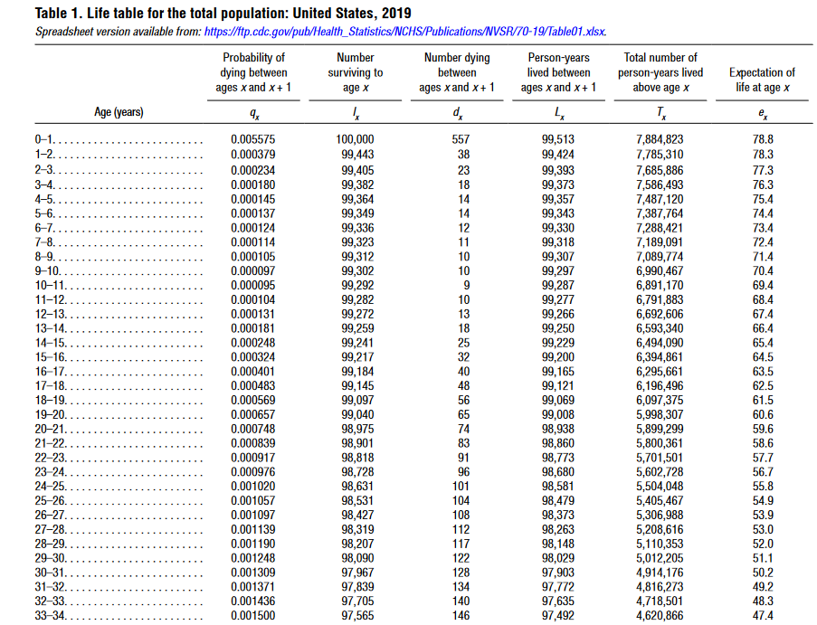
Life tables and Event History Analysis
Once you start trying to apply life table types of analysis to survey data, the more generalized event history analysis body of methods quickly become the first choice. We can still describe the distribution of survival time using similar functions as in the life table.
The core event history or Survival analysis functions are the Survival Function, \(S(t)\), the hazard function, \(h(t)\) and the probability density function, \(f(t)\), The first two are the same as the \(l(x)\) and \(q(x, n)\) functions, and the third centers these methods in probability theory. These three are related and we can derive one from the others.
Now we must generalize these ideas to incorporate them into the broader event-history framework
Survival/duration times measure the time to a certain event.
These times are subject to random variations, and are considered to be random iid (independent and identically distributed; random) variates from some distribution
The distribution of survival times is described by 3 functions
- The survivorship function, \(S(t)\)
- The probability density function, \(f(t)\)
- The hazard function, \(h(t)\)
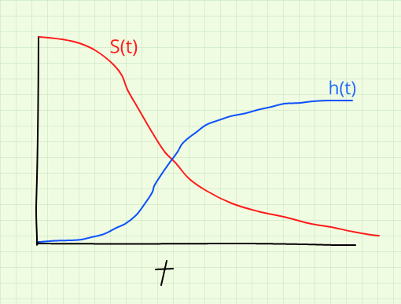
Code
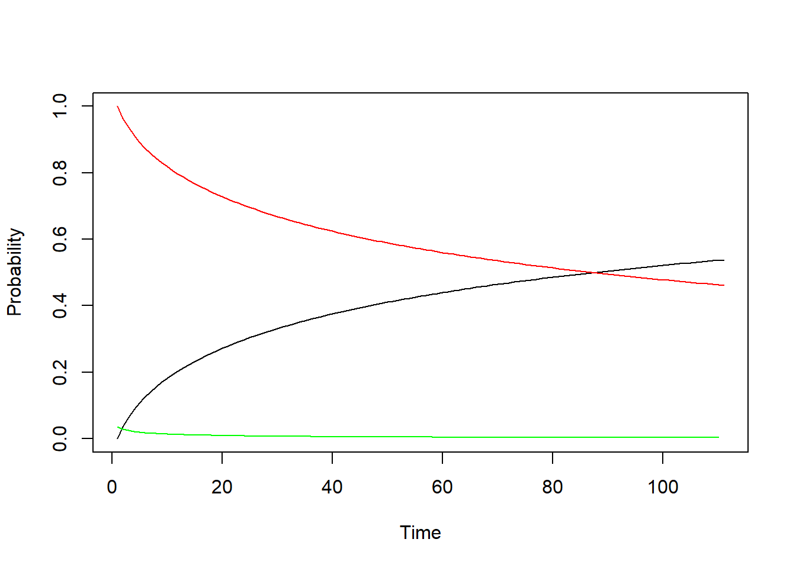
- These three are mathematically related, and if given one, we can calculate the others
- These 3 functions each represent a different aspect of the survival time distribution.
- The fundamental problem in survival analysis is coming up with a way to estimate these functions.
Defining the functions
Let \(T\) denote the survival time, our goal is to characterize the distribution of \(T\) using these 3 functions.
Let \(T\) be a discrete(or continuous) iid random variable and let \(t_i\), be an occurrence of that variable, such that \(Pr(t_i)=Pr(T=t_i)\)
The distribution function, or pdf
Like any other random variates survival times have a simple distribution function that gives the probability of observing a particular survival time within a finite interval
The density function is defined as the limit of the probability that an individual fails (experiences the event) in a short interval \(t+\Delta t\) (read delta t), per width of \(\Delta t\), or simply the probability of failure in a small interval per unit time, \(f(t_i) = Pr(T=t_i)\).
If \(F(t)\) is the cumulative distribution function for T, given by:
\[ F(t) = \int_{0}^{t} f(u) du = Pr(T \leqslant t ) \tag{1}\] Which is the probability of observing a value of T prior to the current value, t.
The density function is then:
\[ f(t) = \frac{F(t)}{d(t)} = F'(t) \tag{2}\] or
\[ f(t) = \lim_{\delta t \rightarrow 0} \frac{F(t+\Delta t) - F(t)}{\Delta t} \tag{3}\]
The density function gives the unconditional instantaneous failure rate in the (very small) interval between t and dt, \(\Delta t\)
Survival Function
The survival function, S(t) is expressed:
\[ S(t) = 1 - F(t) = Pr (T \geqslant t) \tag{4}\]
Which is the probability that T takes a value larger than t. i.e. the event happens some time after the present time.
At \(t = 0, S(t) =1 \text { and at } t= \infty, \text { and } S(t) =0\)
As time passes, \(S(t)\) decreases, and is called a strictly decreasing function of time.
Empirically, \(S(t)\) takes the form of a step function:
Code
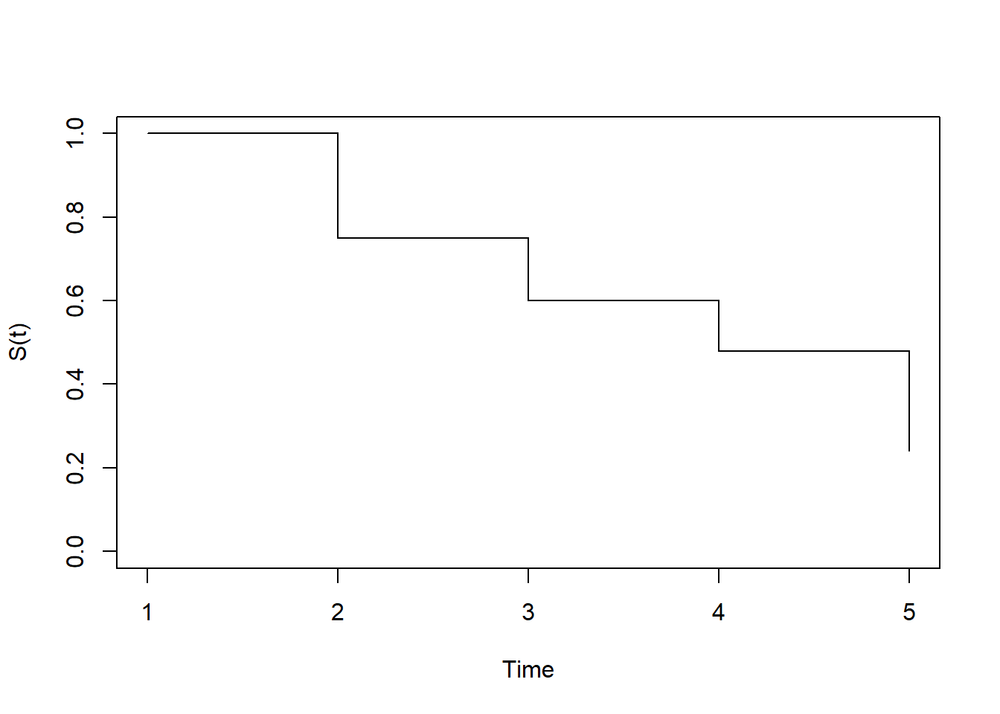
The hazard function
The hazard function relates death, f(t), and survival, S(t), to one another
\[h(t) = \frac{f(t)}{S(t)} \tag{5}\] \[h(t) = \lim_{\Delta t \rightarrow 0} \frac{Pr(t \leqslant T \leqslant t + \Delta t | T \geqslant t)}{\Delta t} \tag{6}\]
Which is the failure rate per unit time in the interval t, \(t+\Delta t\), the hazard may increase or decrease with time, or stay the same. This is really dependent on the distribution of failure times.
Relationships among the three functions
If \(ft = \frac{dF(t)}{dt}\) and \(S(t) = 1- F(t)\) and, \(h(t) = \frac{f(t)}{S(t)}\), then we can write:
\[f(t) = \frac{-dS(t)}{dt} \tag{7}\]
and the hazard function as:
\[h(t) = \frac{-d \text{ log } S(t)}{dt} \tag{8}\]
If we integrate this and let \(S(0)=1\), then
\[S(t) = exp^{-\int_{0}^t h(u) du} = e^{-H(t)} \tag{9}\]
where the quantity, \(H(t)\) is called the cumulative hazard function and,
\(H(t) = \int h(u) du\)
, then
\[H(t) = -\text{log } S(t) \tag{10}\]
The density can be written as:
\[f(t) = h(t) e ^{-H(t)} \tag{11}\] and
\[h(t) = \frac{h(t) e^{-H(t)}}{e^{-H(t)}} = \frac{f(t)}{S(t)} \tag{12}\]
More on the hazard function…
Unlike the f(t) or S(t), h(t) describes the risk an individual faces of experiencing the event, given they have survived up to that time.
This kind of conditional probability is of special interest to us.
We can extend this framework to include effects of individual characteristics on one’s risk, thus not only introducing dependence on time, but also on these characteristics (covariates).
We can re-express the hazard rate with both these conditions as:
\[h(t|x) = \lim_{\Delta t \rightarrow 0} \frac{Pr(t \leqslant T \leqslant t + \Delta t | T \geqslant t, x)}{\Delta t} \tag{13}\]
Example from data
This example will illustrate how to construct a basic survival function from individual-level data. The example will use as its outcome variable, the event of a child dying before age 1. The data for this example come from the Demographic and Health Survey Model Data Files children’s recode file.
The DHS Program has created example data sets for users to practice with. These data sets have been created strictly for practice and do not represent any actual country’s data. See more here.
This file contains information for all births to the sample of women between the ages of 15 and 49 in the last 5 years prior to the survey.
Event - Infant Mortality
In the DHS, they record if a child is dead or alive and the age at death if the child is dead. This can be understood using a series of variables about each child.
If the child is alive at the time of interview, then the variable B5==1, and the age at death is censored.
If the age at death is censored, then the age at the date of interview (censored age at death) is the date of the interview - date of birth (in months).
If the child is dead at the time of interview,then the variable B5!=1, then the age at death in months is the variable B7. Here we code this:
Code
library(forcats)
model.dat<- model.dat%>%
mutate(death.age = ifelse(b5==1,
((((v008))+1900)-(((b3))+1900))
,b7),
#censoring indicator for death by age 1, in months (12 months)
d.event = ifelse(is.na(b7)==T|b7>12,0,1),
d.eventfac = factor(d.event, labels = c("Alive at 1", "Dead by 1")))
table(model.dat$d.eventfac)
Alive at 1 Dead by 1
5434 534 We see 534 infant deaths among the 5968 births in the last 5 years.
Example of Estimating Survival Time Functions from data
To generate a basic life table, we use the survfit() procedure in the survival library. The data for this is a Surv() object, which typically has 2 arguments, the duration, and the censoring indicator. This uses age at death (the death.age variable from above) for children dying before age 1 as the outcome, and the d.event variable from above as the censoring indicator.
| death.age | d.event |
|---|---|
| 5 | 0 |
| 37 | 0 |
| 30 | 0 |
| 10 | 0 |
| 30 | 0 |
| 0 | 1 |
| 34 | 0 |
| 1 | 1 |
| 18 | 0 |
| 3 | 1 |
| 27 | 0 |
| 24 | 0 |
| 12 | 0 |
| 9 | 0 |
| 5 | 1 |
| 54 | 0 |
| 16 | 0 |
| 37 | 0 |
| 30 | 0 |
| 0 | 0 |
[1] 5+ 37+ 30+ 10+ 30+ 0 34+ 1 18+ 3 27+ 24+ 12+ 9+ 5 54+ 16+ 37+ 30+
[20] 0+In the first 20 cases from the data, several children died (no + after the time), while all the other children had not experienced the event (they were still alive at age 12 months), these have a + after their censored age at death.
Code
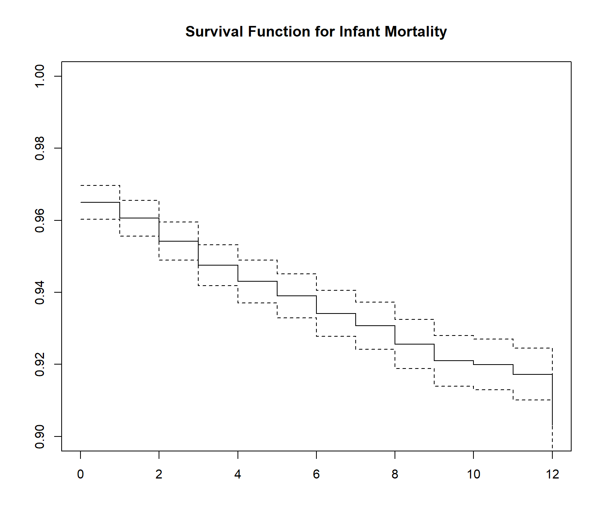
Code
summary(mort)Call: survfit(formula = Surv(death.age, d.event) ~ 1, data = model.dat,
conf.type = "none")
time n.risk n.event survival std.err
0 5968 209 0.965 0.00238
1 5690 26 0.961 0.00252
2 5573 37 0.954 0.00271
3 5423 38 0.948 0.00290
4 5282 25 0.943 0.00302
5 5161 22 0.939 0.00313
6 5021 26 0.934 0.00326
7 4880 18 0.931 0.00334
8 4755 26 0.926 0.00347
9 4621 23 0.921 0.00359
10 4507 5 0.920 0.00361
11 4405 13 0.917 0.00368
12 4303 66 0.903 0.00401This is the so-called Kaplan-Meier estimate of the survival function. At each month, we see the number of children at risk and the number dying. We see the highest number of deaths occurred between 0 and 1 month, which is not surprising.
The estimate is that the infant morality rate is 82.7382814 , I get this by doing 1000*(1-summary(mort)$surv[12]).
We can likewise get an estimate of the hazard function using the Kaplan-Meier method as well, using the muhaz library.
Code
library(muhaz)
haz<-kphaz.fit(time=model.dat$death.age,
status=model.dat$d.event,
method = "product-limit")
kphaz.plot(haz,
main="Hazard function plot")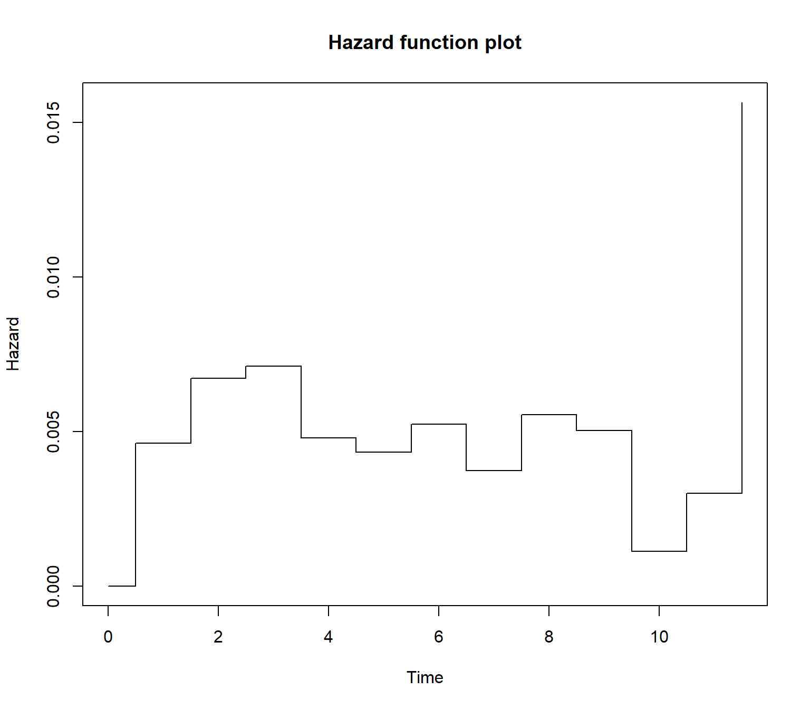
Code
data.frame(haz)This illustrates, that while the largest drop in survivorship occurred between 0 and 1, the hazard is actually higher in the 1-3 month range, illustrating the conditional nature of that probability. There is also a large jump in risk at age 1, which may indicate something about age-heaping in the data.
Now we have our \(S(t)\) and \(h(t)\) functions. We can derive the other functions of survival time from these but integrating (summing) and differentiating these functions.
Code
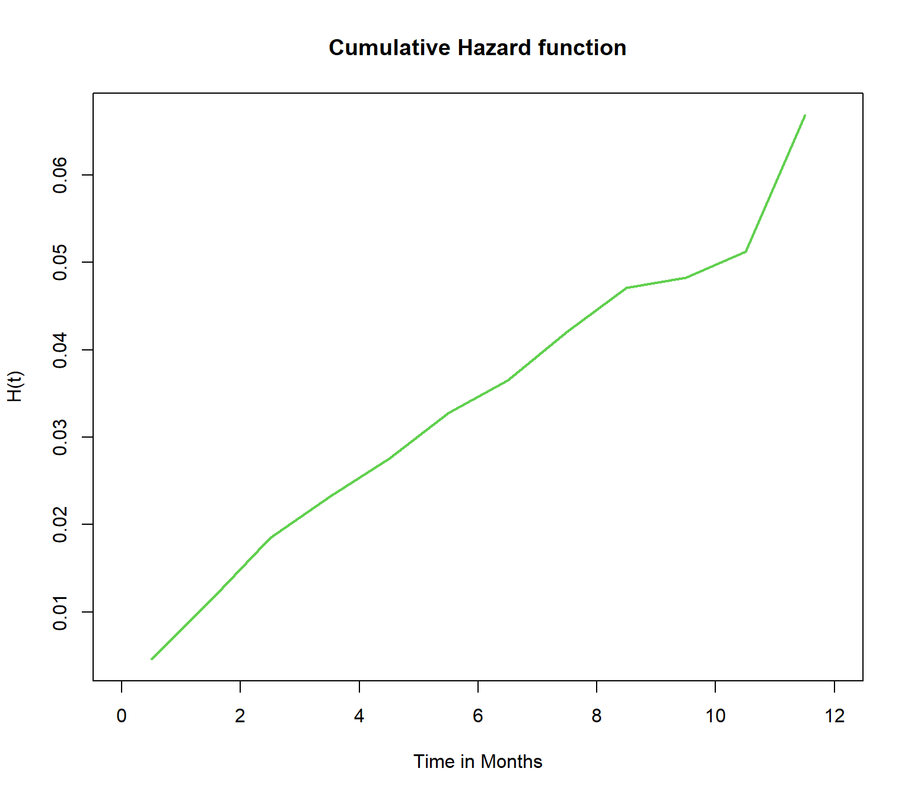
Code
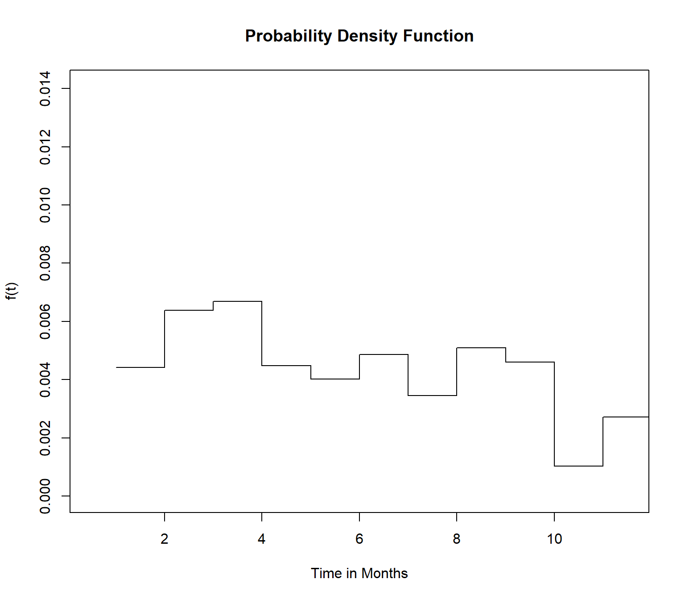
Code
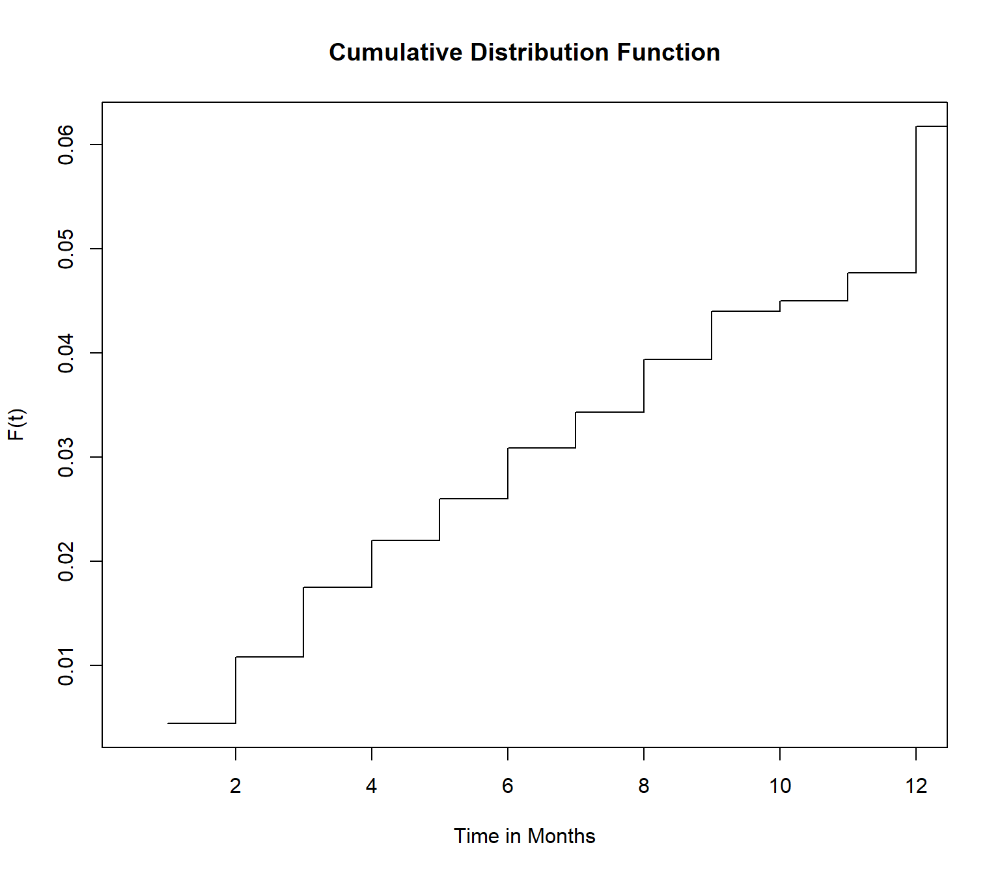
So in this example, we calculated the censored ages at death for children under age 1, we estimated the survival function, hazard and Cumulative hazard functions, and the associated pdf and cdf’s.